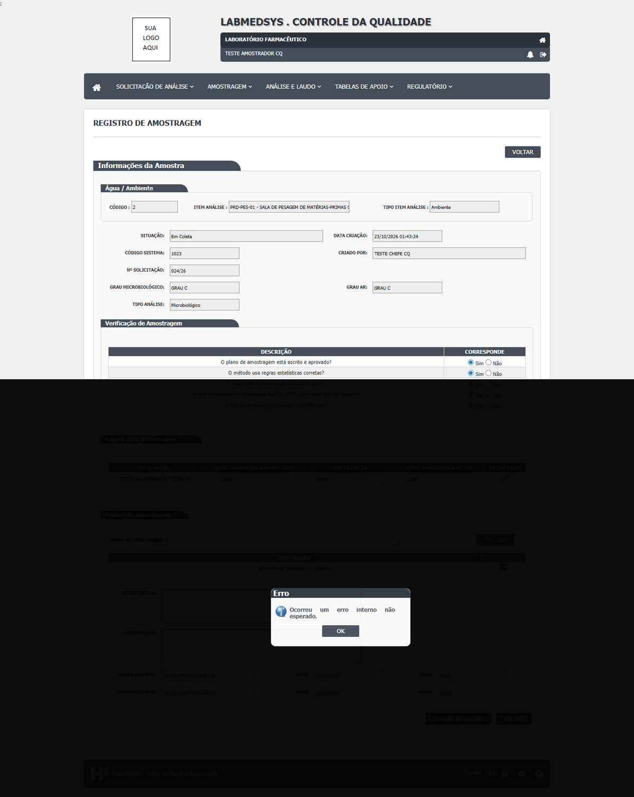
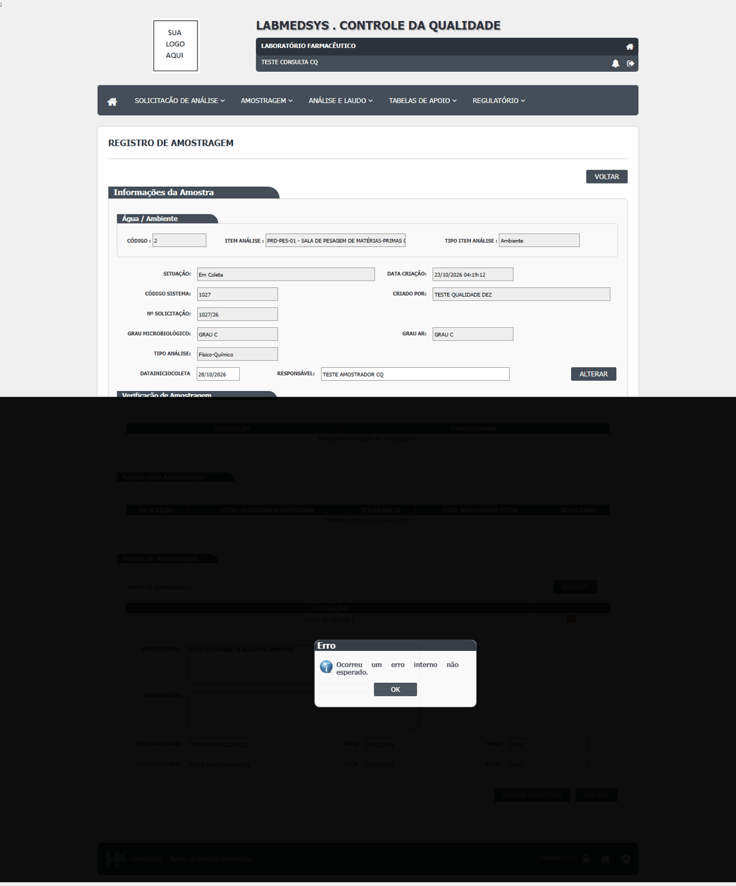
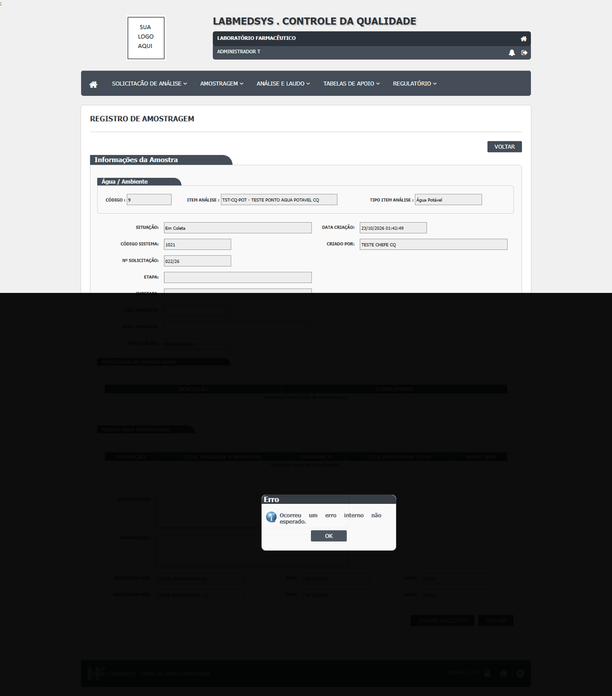
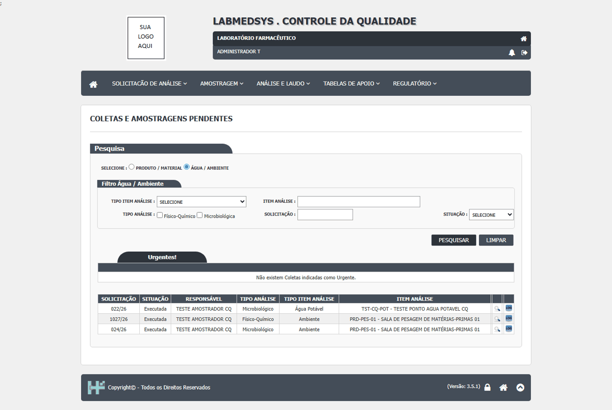

| Defeito | Gravidade | Situação | Título | Tela citada no defeito |
|---|---|---|---|---|
| DV-CQ-019 | Média | Aberto | Ambiente e água: registrar a amostragem mostra "Ocorreu um erro interno não esperado." mas a amostragem fica gravada | Controle da Qualidade › Registro de Amostragem (ambiente e água) |
| DV-CQ-042 | Média | Aberto | Relatórios de estabilidade e de fornecedores quebram com erro técnico quando o registro não existe ou a tela não tem relatório | Controle da Qualidade › Estabilidade (impressão do laudo do acompanhamento e relatório final) e Avaliação de Desempenho de Fornecedores (relatório) |
Cada defeito, com o passo a passo e as capturas
DV-CQ-019 · Ambiente e água: registrar a amostragem mostra "Ocorreu um erro interno não esperado." mas a amostragem fica gravada
Ao salvar o registro da amostragem da sala PRD-PES-01 (024/26), com ponto de amostragem, verificador e amostrador, a tela respondeu **"Ocorreu um erro interno não esperado."**; mesmo assim a amostragem passou para **Executada** e a solicitação para Análise pendente. Quem registrou não sabe se gravou.
Como reproduzir o erro, passo a passo
- Em Amostragens Pendentes, abrir a amostragem de uma solicitação de ambiente.
- Informar ponto de amostragem, verificador, amostrador, data, hora, quantidade e Salvar Registro.
Esperado
Gravar e confirmar, ou recusar com a causa.
Obtido
Erro na tela e registro gravado.
Evidência (captura da tela)




DV-CQ-042 · Relatórios de estabilidade e de fornecedores quebram com erro técnico quando o registro não existe ou a tela não tem relatório
Chamando as saídas de impressão pelo endereço com um número que não existe, o laudo do acompanhamento de estabilidade responde **HTTP 500 "Object reference not set to an instance of an object"** (página técnica do servidor) e o relatório final de estabilidade devolve um **PDF em branco** ("BOLETIM DE ESTUDO DE ESTABILIDADE" sem produto, lote, datas nem conclusão), sem aviso de que o estudo não existe. A ação "Relatório" da Avaliação de Desempenho de Fornecedores responde **HTTP 500** porque a página dela não existe (a mensagem lista as pastas onde o sistema procurou). Como não há estudo de estabilidade aberto (DV-EST-074), o relatório final não pôde ser conferido com dados reais.
Como reproduzir o erro, passo a passo
- Abrir, logado, o endereço de impressão do laudo do acompanhamento de estabilidade com um número qualquer (por exemplo 1).
- Abrir o endereço do relatório final de estabilidade com o mesmo número.
- Abrir o endereço "Relatório" da Avaliação de Desempenho de Fornecedores.
Esperado
Mensagem clara de que o registro não existe (ou a saída oculta), e relatório que só gere PDF com dados.
Obtido
Erro 500 técnico, PDF em branco e erro 500 de página inexistente.
Sem captura de tela registrada para este defeito.